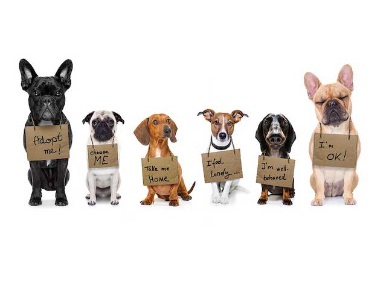

Local Pet Adoption Service
Welcome! This website shares some info about a local pet adoption service.
You can see adoption steps.
Home
Available Pets
Adoption Steps
- Browse pets and choose one
- Fill out an adoption form
- Meet the pet
- Bring your new pet home
Why Adopt?
- You give a pet a second chance
- You support your local community
- Many pets are already vaccinated and checked
Learn more (research source) :
Wikipedia: Animal shelter
